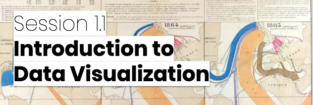

Benjamin Bach, PhD, HDR
Research Scientist
Inria, France
Bivwac team
200 Av. de la vieille Tour
33400 Talence, France
benjamin.bach@inria.fr
Google Scholar
LinkedIn
OrcID: 0000-0002-9201-7744
Full CV
Research & Bio
Publications
Teaching
Online Course Data Visualization for Professionals
The VisHub is running a visualization course for working professionals. This is a 10-week long online course build around lectures, live tutorials, talks, Q&A sessions, individual check-in sessions with the course organizers, and project work. Each participant can join with their own data set and develop their own visualization project along the structured guidance and feedback along the 10 weeks. The course ends with a certificate.
For more details, see the course website.
The course allows us to better understand how visualizations is used and valued in application and which challenges and expectations people using visualization methods and tools see in their work and engagement with visualization.
People involved
- Benjamin Bach
- Aba-Sah Dadzie
- Uta Hinrichs
- Zehzong Wang
Publications


Cheat Sheets for Data Visualization Techniques Zezhong Wang, Lovisa Sundin, Dave Murray-Rust, Benjamin Bach. ACM Conference on Human Factors in Computing Systems (CHI). (2020). [VIDEO]

Teaching Data Visualization and Storytelling with Data Comic Workshops Zezhong Wang, Harvey Dingwal, Benjamin Bach. ACM Conference on Human Factors in Computing Systems (CHI), Extended Abstracts. (2019).